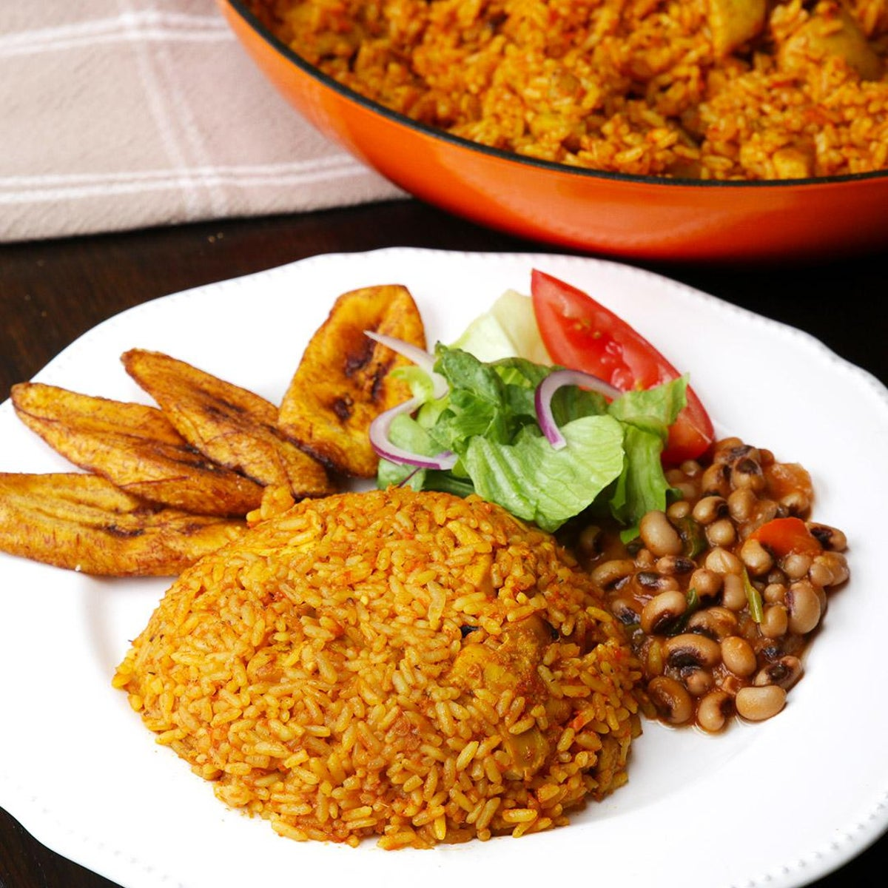

JOLLOF RICE

DESCRIPTION
Jollof rice is a spiced dish, simmered in reduced tomatoes, onions, peppers, and different seasonings depending on where it’s made. It’s an iconic dish, with massive regional significance across West Africa and a staple in celebratory social gatherings, including at Lagos parties in Nigeria. The dark-orange spicy rice dish can be eaten by itself, but also be enjoyed along with side dishes, including fried plantains.
INGREDIENTS
- 1/3 cup oil (vegetable/canola/coconut, not olive oil
- 6 medium-sized fresh plum/Roma tomatoes, chopped, OR a 400-gram tin of tomatoes
- 6 fresh, red poblano peppers (or 4 large red bell peppers), seeds discarded
- 3 medium-sized red onions (1 sliced thinly, 2 roughly chopped), divided
- 1/2 to 1 hot pepper, or to taste (yellow Scotch bonnets are my favourite)
- 3 tablespoons tomato paste
- 2 teaspoons (Caribbean/Jamaican-style) curry powder
- 1 teaspoon dried thyme
- 2 dried bay leaves
- 5 to 6 cups stock (vegetable, chicken, or beef) or water, divided
- 2 teaspoons unsalted butter (optional), divided
- 4 cups uncooked converted long-grain rice or golden sella basmati, rinsed
- Salt, to taste
- Black and white pepper, to taste
- Extra: sliced onions, tomatoes